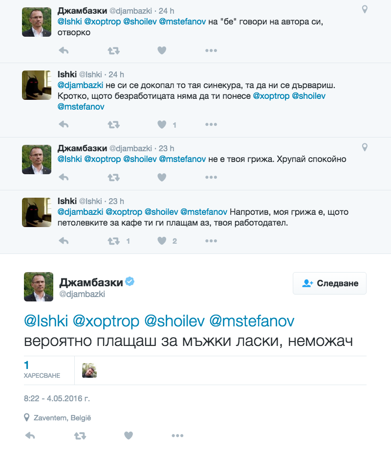

Bulgarian MEP Angel Dzhambazki extremely rude on Twitter
On Wednesday, May 4th, EP member from Bulgaria Angel Dzhambazki–also a member of the European Conservatives and Reformists group–engaged in a “conversation” on Twitter with some Bulgarians who were commenting on a controversial article of his. Dzhambazki used his verified Twitter profile to do so. His comments were rather rude, dismissive, with disrespect or directly insulting the people he replied to. He showed a stunning lack of manners for an active member of the European Parliament.
The insults include phrases like “you probably pay for male companionship, you incapable one” and “worthless is the person who made you”.
If such behavior is tolerated and goes unsanctioned by the European Conservatives and Reformists group he’s a member of, it would prompt the question what kind of people they’re comfortable with in their party.
Maybe MEP Dzhambazki thinks that if he’s conversing in Bulgarian there’s no reason to worry about reactions from his colleagues. Will that be the case?
To help understand the context, we’re sharing translated excerpts from the conversations in question. Note that the English translation of some words or phrases is just a rough approximation since Dzhambazki often used slang and some made-up words.
It all started with the following exchange (English translation below):
The above conversation roughly translates to the following:
TIL that @djambazki writes his nonsense on a-specto a-specto.bg/kakvo-vi-prech…
@shoilev what are you and why are you bothering me with yourself?
He’s probably a voter.
@mstefanov @shoilev probably. My question is why is he annoying me and bothering me with himself. Question goes out to you too, Stefanov.
@djambazki you’re saying they shouldn’t stand in your way?
@xoptrop @shoilev @mstefanov I’m saying stop annoying me and bothering me with your problems. I can neither solve them, nor help you.
The conversation continues and Dzhambazki’s replies quickly escalate in tone and he starts to be extremely rude:

@Ishki @xoptrop @shoilev @mstefanov it’s none of your concern.
(This is a very rough translation.)
@djambazki @xoptrop @shoilev @mstefanov On the contrary. It’s my concern because your coffee money are payed by me, your employer.
@Ishki @xoptrop @shoilev @mstefanov you probably pay for male companionship, you incapable one
(MEP Dzhambazki used “неможач” in his tweet which translates roughly to “someone who’s incapable”.)
MEP Dzhambazki continues:
@Ishki Who’re you to explain it to me? Don’t waste your time, I suspect that you don’t know, you don’t understand and most importantly–you cannot.
@Ishki I’ll repeat again–worthless is the person who made you.
Unfortunately there are many more tweets along these lines, which can be followed in MEP Dzhambazki’s Twitter profile. He’s proactively blocking any Twitter user who points out that such statements are highly inappropriate coming from a member of the European Parliament, and from anyone in that matter, but his Twitter stream is still publicly accessible and his tweets are there for everyone to see. He’s apparently not ashamed of what he wrote.
We will contact the European Conservatives and Reformists group to ask for their comment on the actions of their member to see if MEP Angel Dzhambazki will turn out right that his conversations in Bulgarian are consequences-free.
Thanks to Dimitar Smilyanov who provided most of the translations of the tweets in this article.